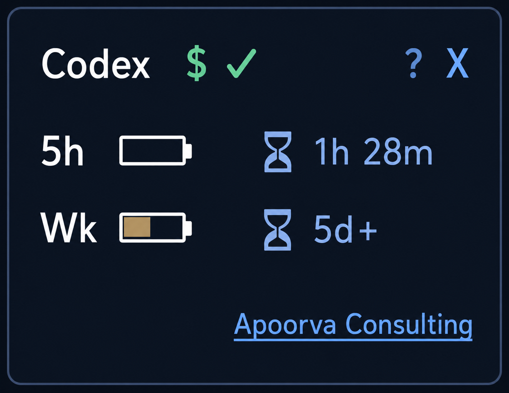

Purpose
This app helps you quickly see your current Codex quota health without opening the full CLI view. It refreshes automatically and is designed to stay minimal, unobtrusive, and glanceable.
A tiny always-on-top desktop widget for Windows that monitors Codex quota status in real time and displays it in a compact, taskbar-friendly layout.
This app helps you quickly see your current Codex quota health without opening the full CLI view. It refreshes automatically and is designed to stay minimal, unobtrusive, and glanceable.
Current compact UI reference:

This project is released for free, non-commercial use. You may use, modify, and redistribute it for non-commercial purposes with attribution.
Full text (DE translation): LICENSE.de.txt
Full text (EN, binding): LICENSE
For AI based Analytics projects and further help visit: https://www.zinzuvadia-online.com
Current version: 0.1.0-rc.2
Source of truth: VERSION
Full release history: docs/changelog.md
Please test this app with your own Codex CLI setup and account. If you see errors, unexpected status values, or UI issues, please report them in GitHub Issues.
Report here: GitHub Issues
The widget currently shows credit availability status (`$ ✓ / ✕ / ?`) but does not reliably show numeric billing credit values, because this value is not exposed through the current supported Codex client interface.
Tracking issue: openai/codex#10233
Some RC/beta binaries may be unsigned and can trigger antivirus warnings. Verify file integrity before running.
Full guidance: SECURITY.md
The widget uses a local background Codex app-server session and reads status via JSON-RPC, instead of parsing interactive terminal output. This avoids TTY constraints from `/status` in the interactive UI path.
Tech stack: Python 3, Tkinter UI, subprocess + threading, JSON-RPC over stdio to Codex app-server.
Assumptions / prerequisites: